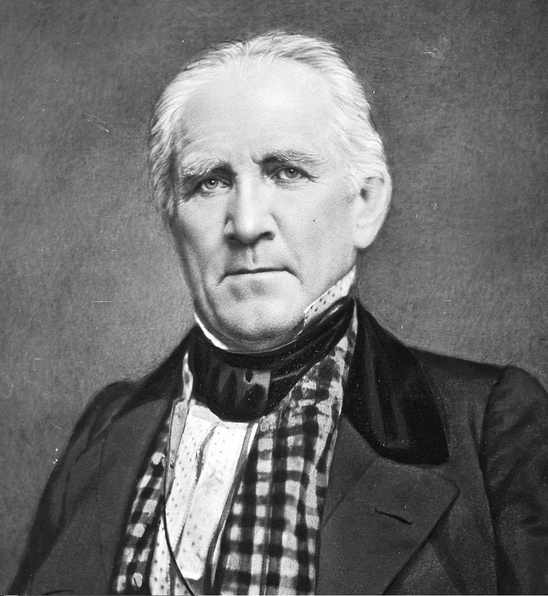
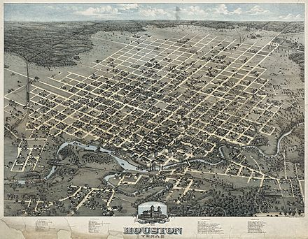
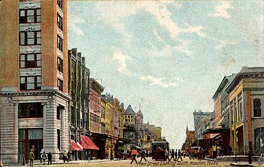
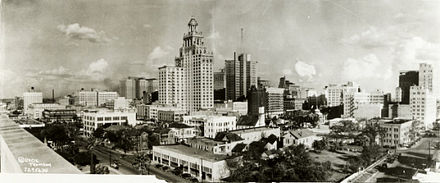
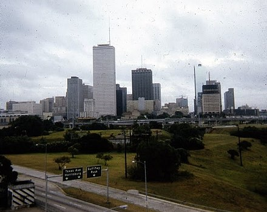
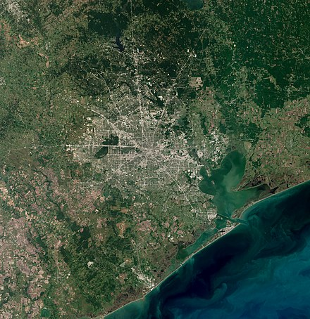

Хьюстон был основан 30 августа 1836 года и включён в состав республики Техас 5 июня 1837 года, получив своё имя в честь Сэмюэла Хьюстона — главнокомандующего армией Техаса во время Техасской революции и президента Республики Техас. Быстрое развитие порта и железных дорог в XIX веке, а также начало добычи нефти и последовавшее развитие нефтяной промышленности в XX веке привели к быстрому росту населения. В 1960-е годы количество жителей превысило один миллион человек, а в 2000-е — два миллиона.
Город является ведущим мировым центром энергетической промышленности, а экономика города также представлена предприятиями в области аэронавтики, транспорта и здравоохранения. Важнейшими объектами для экономики и инфраструктуры города являются космический центр имени Линдона Джонсона, крупнейший американский по международным грузоперевозкам порт, хьюстонский судоходный канал, крупнейший в мире Техасский медицинский центр.
Содержание
История
Этимология и основание

Cэмюэл Хьюстон
Город назван в честь Сэмюэла Хьюстона — главнокомандующего армией Техаса во время Техасской революции (1835—1836) и президента Республики Техас (1836—1838, 1841—1844).
После окончания войны за независимость Техаса, в августе 1836 года предприниматели братья Август и Джон Аллены купили 26,9 км² земли вдоль реки Буффало-Байю, планируя основать на ней населённый пункт. Они хотели, чтобы будущий город стал столицей Техаса и крупным торговым центром.
Датой основания города принято считать 30 августа 1836 года, когда братья Аллены разместили объявление о появлении города. Город назвали в честь генерала Сэма Хьюстона, возглавлявшего армию техасцев в битве при Сан-Хасинто во время войны против Мексики, позже избранного президентом Техаса[5][6][7]. На январь 1837 года в посёлке проживало всего 12 человек, однако через четыре месяца население возросло до 1500 человек. 5 июня 1837 года город был включён в округ Гаррисберг (ныне Харрис) и стал временной столицей Республики Техас, которой оставался до 1839 года. Первым мэром Хьюстона стал Джеймс Холман.
XIX век
Allen's Landing – место, где был основан город
В 1840 году жители Хьюстона создали торговую палату, деятельность которой была направлена на развитие бизнеса по морским перевозкам и недавно построенного порта на Буффало-Байю, в течение первых четырёх лет палата стремительно развивалась. Значимость торговой палаты в экономике росла, в 1853 году Законодательное собрание Техаса выделило денежные средства на улучшение каналов Буффало-Байю. В 1846 году город вошёл в состав США вместе с Республикой Техас.
К 1860 году были проложены железные дороги, связавшие Хьюстон, Галвестон и Бомонт. В этом же году Хьюстон стал железнодорожным узлом для экспорта хлопка. Во время гражданской войны город служил штабом генерала Джона Магрудера, использовавшего его в качестве организационного пункта для сражения у Галвестона. В 1860-х годах продолжал развиваться важный для экономики города объект — канал на Буффало-Байю. С середины XIX века началась активная торговля между Хьюстоном и близлежащими городами; к 1890 году город стал железнодорожным центром Техаса.
К концу века в городе уже были электрическое освещение, улицы из блоков и булыжников. Городской общественный транспорт представляла конка.
XX век

Хьюстон в 1873 году

Мэйн-Стрит в центре, 1908 год

Панорама центра, 1927 год

Центр Хьюстона в 1971 году
В 1900 году на Хьюстон обрушился Галвестонский ураган, продолжавшийся с 27 августа по 12 сентября. В пересчете на сегодняшний курс ущерб составил бы $526 млн, погибло 8 тысяч человек. В следующем году было найдено большое месторождение нефти вблизи города Бомонт, что послужило началом развития нефтяной промышленности в Техасе. В 1902 году президент США Теодор Рузвельт утвердил проект стоимостью в $1 млн на реконструкцию хьюстонского судоходного канала. К 1910 году численность населения города достигла 78 800 человек, почти в два раза превысив количество жителей проживавших в Хьюстоне в 1900 году. В 1914 году президент США Вудро Вильсон принял участие в открытии нового глубоководного порта Хьюстона, а через год был открыт хьюстонский судоходный канал.
Физико-географическая характеристика
Географическое положение

Хьюстон со спутника в 2020 году
Хьюстон расположен в 50 километрах от Мексиканского залива на прибрежной равнине. Значительная часть города была построена на лесных угодьях, болотах и прериях, они до сих пор сохранились в близлежащих районах около Хьюстона. Город расположен на территории, для которой обычны частые ливни и дожди, поэтому для Хьюстона наводнения — постоянная проблема. Высота города над уровнем моря в среднем 15 метров, самая высшая точка — северо-запад Хьюстона (38 метров). Площадь города составляет 1 739,62 км², из которых 1 658,72 км² занято сушей, а 80,9 км² — водная поверхность.
Климат
Город находится в зоне субтропического муссонного климата по классификации Кёппена (Cfa). Преобладающие юго-восточные ветры с Мексиканского залива дуют на протяжении всего года. Большая влажность в городе обусловлена близким присутствием Мексиканского залива. Влажность воздуха достигает утром 90 % и к полудню снижается до 70 %. В среднем 90 дней в году — солнечные, большая часть которых в октябре и ноябре. 160 дней в году — облачные, большая часть — с декабря по май.
Весной и летом в городе жарко и влажно: средняя температура весной 21 °C, а летом — 28,8 °C. Из-за высокой температуры почти во всех транспортных средствах и зданиях установлены кондиционеры. Абсолютный максимум температуры был зарегистрирован в 2000 и 2011 годах, когда она составила 42,8 °C. На Хьюстон часто обрушиваются ураганы, самые крупные из которых за последние десятилетия — «Эллисон» и «Айк». Осень — достаточно тёплое время года, особенно сентябрь. Температура в этом месяце выше, чем в мае. Средняя температура осенью составляет 21,8 °C, а среднее количество осадков — самое высокое в году (359,7 мм). Зима тёплая. Самая низкая температура была зарегистрирована в 1930 году — −15 °C. Средняя температура зимой составляет 12,6 °C, а максимальная была зарегистрирована в 1986 году — 32,8 °C. 18 дней в году температура опускается ниже 0 °C. Обычно зимой осадки выпадают в виде дождя, но редко могут быть и в виде снега. Начиная с 1895 года, снег падал 35 раз, причём 21 раз устанавливался временный снежный покров.
Дни с ясной и дождливой погодой в месяц (суммарно по часам)
Месяц
Янв
Фев
Мар
Апр
Май
Июн
Июл
Авг
Сен
Окт
Ноя
Дек
Год
Солнечное сияние, день
10
10
9
8
8
8
10
9
7
7
8
9
103
Дождь, день
14
12
12
10
10
14
13
12
10
9
10
12
138
Показатель
Янв
Фев
Мар
Апр
Май
Июн
Июл
Авг
Сен
Окт
Ноя
Дек
Год
Абсолютный максимум, °C
30,6
32,8
35,6
35,0
37,2
41,7
40,6
42,8
42,8
37,2
31,2
29,4
42,8
Средний максимум, °C
17,2
19,1
22,8
26,5
30,2
33,0
34,3
34,8
32,1
27,8
22,5
18,0
26,5
Средняя температура, °C
11,7
13,6
17,1
20,9
25,0
28,0
29,1
29,2
26,6
22,0
16,9
12,5
21,05
Норма осадков, мм
85,9
81,3
86,6
84,1
129,3
150,6
96,3
95,5
104,7
144,8
110,2
95
1264,3
Рельеф, внутренние воды
Для почв Хьюстона характерно наличие осадочных горных пород и песка. На поверхности часты эрозии, на территории города находится около 300 разломов, их общая длина примерно 500 км. Один из них — Long Point–Eureka Heights fault system. Также есть уникальные отложения из смеси песков и глин, благодаря им, через определённое время, из разлагающихся органических веществ образуются нефть и природный газ. На окраинах Хьюстона встречается чёрная плодородная почва, на которой растят рис, сою, зерновые культуры, овощи и разводят крупный рогатый скот, лошадей, свиней и домашнюю птицу. В городе и его окрестностях имеется очень малая вероятность сильного землетрясения, а самое сильное землетрясение магнитудой 3,8 было в 1910 годy.
В Хьюстоне протекают четыре реки. Основная, Буффало-Байю, проходит через центр города и хьюстонский судоходный канал, и имеет три притока. Брес-Байю протекает вдоль района Техасского медицинского центра, Симс-Байю проходит через южную часть города, Уайт-Ок-Байю — через северную часть города. Судоходный канал следует дальше до Галвестона, вплоть до Мексиканского залива. В пригороде находятся два озера: Конро и Хьюстон, которые являются водохранилищем и служат городскими источниками воды. На территории города протекает множество подземных вод, которые раньше активно использовали для водоснабжения, но перестали из-за медленного движения земной поверхности.
Флора и Фауна
В флоре и фауне округа Харрис преобладают виды животных и растений, обитающих в болотных местностях, так как значительная часть города построена на болотах и прериях.
Среди земноводных и пресмыкающихся наиболее известны хьюстонская жаба и техасская рогатая ящерица. Среди млекопитающих можно отметить рыжего волка, оцелота и канадскую выдру. Среди птиц замечаются американский клювач и белоголовый орлан. Численность большинства животных за последний век значительно сократилась в черте округа и находится под угрозой исчезновения из-за их истребления и ухудшения экологической обстановки. В городе также водятся комары, представляющие опасность человеку.
В городе и его пригородах растут сосны, пальмы и другие деревья, растущие в субтропическом климате. Среди растений, произрастающих в городе, можно выделить орхидеи и магнолии.
Экологическая обстановка
Главными источниками загрязнения воздуха в Хьюстоне являются выхлопные газы от автомобилей, а также выбросы от более чем 400 химических предприятий, в числе которых два крупных нефтеперерабатывающих завода и нефтехимический комплекс вдоль судоходного канала и порта. Ситуация осложняется метеорологическими условиями: с апреля по октябрь в городе большое количество солнечных безветренных дней с высокими температурой и влажностью, из-за чего выбросы оседают над городом. Как следствие сложившейся экологической ситуации, из всех болезней наиболее распространены респираторные и онкологические. По данным американской лёгочной ассоциации в 2022 году Хьюстон занял 22 место в списке самых загрязнённых городов США по концентрации вредных веществ и 8 место по концентрации озона. В начале 2000-х ситуация с качеством воздуха была ещё хуже: Хьюстон уступал по уровню загрязнения только Лос-Анджелесу.
Административное устройство
Органы власти
Главой Хьюстона является мэр. Мэр является главным должностным лицом, он отвечает за общее руководство городом, подписывает все постановления и законы, принятые городским Советом и следит за тем, чтобы они выполнялись. Помимо этого, мэр представляет Совету годовой бюджет города для одобрения, а затем предоставляет Совету информацию о его исполнении. Глава города избирается гражданами города путём голосованию максимум на два срока, по 4 года каждый. Со 2 января 2016 года пост мэра занимает Сильвестр Тёрнер — член Демократической партии. Городской Совет Хьюстона состоит из одиннадцати человек, выбранных от одиннадцати избирательных округов, и пяти человек, выбранных от всего города в целом. Члены Совета избираются на такой же срок, как и мэр. В полномочия Совета входят назначение избранного мэра, изменение и подтверждение бюджета города, управление городской недвижимостью, ассигнование и выпуск облигаций, заключение контрактов и одобрение городских расходов на сумму более $50 тысяч. Городской контролёр, в обязанности которого входит распределять средства и финансировать городской бюджет, избирается независимо от мэра и совета. Со 2 января 2016 года эту должность занимает Крис Браун.
Хьюстон — самый крупный город США без административного деления. Город является административным центром округа Харрис, а также главным экономическим центром Большого Хьюстона.
Внешние связи
В мэрии Хьюстона есть отдел по международной торговле и развитию, занимающийся взаимодействием администрации города с международным бизнес-сообществом. В 2018 году Хьюстон посетило 165 иностранных делегаций из 40 стран. В Хьюстоне расположены консульства 82 стран. По количеству консульств город занимает в США третье место после Нью-Йорка и Лос-Анджелеса. Более 430 хьюстонских компаний имеют офисы за рубежом, а также в городе располагаются офисы 800 зарубежных компаний.
С 9 по 11 июля 1990 года в городе состоялся 16-й саммит G7. Ежегодно в Хьюстоне проводятся международные конференции, такие как Offshore Technology Conference и CERAWeek, где обсуждаются вопросы энергетики.
На данный момент у Хьюстона 17 городов-побратимов.
Абу-Даби, Объединённые Арабские Эмираты
Баку, Азербайджан
Басра,Ирак
Тиба, Япония
Абердин, Великобритания
Гуаякиль, Эквадор
Уэльва, Испания
Стамбул, Турция
Карачи, Пакистан
Лейпциг, Германия
Лаунда, Ангола
Ницца, Франция
Шэнчьжэнь, Китай
Ставангер, Норвегия
Тайбэк, Тайвань
Тюмень, Россия
Ульсан, Республика Корея
Экономика
Общее состояние
Хьюстон является одним из ведущих городов мира в сферах добычи и переработки нефти и природного газа, из-за чего часто именуется «энергетической столицей мира». В Хьюстоне базируется 21 компания из списка Fortune 500, которая входит в 500 крупнейших компаний.
Валовой внутренний продукт агломерации Большого Хьюстона в 2020 году составил $488,16 млрд и является седьмым по величине среди показателей других агломераций. Крупнейшими пятью отраслями в формировании в структуре ВВП являются: операции со страхованием, недвижимостью, арендой, лизингом и финансами — 18,4 %, оказание профессиональных и бизнес-услуг — 14,5 %, промышленное производство — 14,4 %, государственный сектор — 8,8 % и образовательные, медицинские и социальные услуги — 6,2 %.
По итогам 2021 года экспорт Большого Хьюстона составил $176,8 млрд, а импорт — $96,1 млрд. Основными статьями экспорта являлись: нефтепродукты — $111 млрд (56,4 %), химикаты — $17,3 млрд (9,6 %), пластик и продукты из пластика — $9,9 млрд (7,1 %), промышленное и компьютерное оборудование — $8,7 млрд (6,4 %), транспортные средства и запасные части к ним — $4,3 млрд (2,8 %). Значимыми статьями импорта стали: нефтепродукты — $21,4 млрд (22,3 %), промышленное и компьютерное оборудование — $13 млрд (13,5 %), электрооборудование — $6,7 млрд (7 %), изделия из железа и стали — $5,9 млрд (6,1 %), транспортные средства и запасные части к ним — $5,6 млрд (5,8 %).
Международная исследовательская компания Mercer в 2019 году отвела Хьюстону 66 место в рейтинге самых удобных для проживания городов мира — наравне с американскими Лос-Анджелесом и Майами, а по стоимости жизни в рейтинге 2022 года город занял 85 место — между австралийской Брисбеном и британским Глазго. В категории «лучшие места для бизнеса и карьеры» по версии журнала Forbes за 2019 год Хьюстон занимает 34 место в США. Исследовательская компания A.T. Kearney поставила Хьюстон на 37 место в списке глобальных городов мира.
К 1980-м годам в городе была развита преимущественно нефтяная промышленность, составлявшая 87 % всей экономики города, что привело к серьёзной зависимости от цен на нефть. В середине 1980-х годов в экономике города была рецессия вследствие нефтяного кризиса того десятилетия, что привело к потере 220 тысяч рабочих мест. C конца 1980-х годов Хьюстон диверсифицирует свою экономику, сосредоточив внимание на развитии аэрокосмической промышленности, здравоохранения, информационных технологий, а ярким примером могут служить такие крупные организации, как Техасский медицинский центр и городской порт. Доля нефтяной индустрии в экономике снизилась вдвое — с 87 % до 44 % к 2016 году. По состоянию на середину 2022 года экономика Хьюстона активно восстанавливается после пандемии COVID-19 и находится в процессе выхода на уровень допандемийного периода, а главным вызовом стала высокая инфляция вследствие прерывания глобальных цепочек поставок из-за прошедшей пандемии и продолжающихся с февраля 2022 года военных действий в Украине.
Минимальная заработная плата в Хьюстоне в час составляет $7,25 или $1 257 в месяц. Безработица на сентябрь 2022 года составила 4,2 %. За чертой бедности в 2020 году находилось 192 657 человек или 8,4 % жителей. Средние доходы семьи на 2018 год по данным Forbes составляют $62 900, а средняя цена дома составляет $238 000.
Энергетика и нефтехимия
В Хьюстоне на 2022 год расположено 4 730 энергетических компаний, связанных с ведением бизнеса в энергетической отрасли, в том числе штаб-квартиры 14 энергетических и нефтяных компаний, входящих в рейтинг 500 крупнейших компаний США (Fortune 500): Phillips 66, ConocoPhillips, Plains All American Pipeline, Enterprise Products Partners, NRG Energy[en], Occidental Petroleum, Baker Hughes, EOG Resources, Targa Resources, Kinder Morgan, Cheniere Energy, Halliburton, CenterPoint Energy и Apache. Хьюстон является членом Всемирного партнёрства энергетических городов. Одной из самых крупных компаний, входящих в рейтинг Fortune 500 и обеспечивающих электроэнергией город, является компания CenterPoint Energy[en], которая обслуживает свыше 7 миллионов потребителей в восьми штатах: Арканзас, Индиана, Луизиана, Миннесота, Миссисипи, Огайо, Оклахома и Техас. Другая крупная энергетическая компания Calpine обладает парком из 76 электростанций разных типов c суммарной мощностью в 26 тысяч мегаватт, расположенных в 22 штатах США, а также в Канаде и Мексике по всей территории США. Компания насчитывает 2300 сотрудников, на Техас приходится 35 % генерации электроэнергии, а 65 % — на остальные места деятельности компании. Одна из электростанций Calpine, именуемая Channel Energy Center, расположена в Хьюстоне и её максимальная мощность составляет 827 мегаватт (базовая — 743 мегаватт), всего в Техасе расположено 12 электростанций компании.
Из общего числа энергетических компаний 495 компаний работают в сфере нефтехимии. В 2021 году в хьюстонском регионе находилось 10 нефтеперерабатывающих заводов, перерабатывающих 2,6 миллиона баррелей в день, что составляет 14,3 % от всей переработки в США. В регионе по состоянию на 2022 год находится 23,8 % рабочих мест из всех мест в США, занятых в сфере добычи нефти и газа, (33,4 тысячи из 140,2 тысяч) и 17 % от числа занятых в нефтепромысловых услугах (33,6 тысячи из 198 тысяч)[107]. По итогам 2021 года на Большой Хьюстон приходилось 44 % базовых нефтехимических мощностей страны, в частности, в агломерации было произведено смол: 58,9 % — бутадиеновых, 45,8 % — пропиленовых, 44,5 % — этиленовых, 40,2 % — бензоловых, 40 % — ксилоловых и 35,6 % — толуоловых.
Согласно агентству по охране окружающей среды США, начиная с 2014 года Хьюстон является крупнейшим среди других городов США потребителем «зелёной» энергии, полученной из возобновляемых источников по программе Green Power Partnership. Все муниципальные объекты города Хьюстона, суммарно потребляющие свыше 1 миллиард киловатт-часов, полностью работают энергии от возобновляемых источников.
Авиакосмическая промышленность
По состоянию на 2022 год в сфере авиакосмической промышленности Хьюстона задействованы 350 компаний, а объём торговли в данной отрасли в 2021 году составил $ 1,3 млрд.
В Хьюстоне расположен космический центр имени Линдона Джонсона, насчитывающий свыше 11 тысяч сотрудников, в функции которого входят управление полётами, строительство и обслуживание космических кораблей, подготовка космонавтов к полётам и наблюдение за проводимыми в космосе научными экспериментами. Центр, основанный в 1961 году, обеспечивал подготовку космонавтов к программам полётов Джемини и Аполлон, а на данный момент обеспечивает подготовку космонавтов к полётам на Международную космическую станцию (МКС) и до недавнего времени занимался разработкой космического корабля «Орион».
Хьюстон является одним из хабов третьей по величине в США авиакомпании United Airlines. Космическая компания Axiom Space в настоящее время возводит в черте города кампус для производственных мощностей со штаб-квартирой, строительство завершится в апреле 2023 года в рамках первой фазы, а на второй фазе будут построены помещения для лабораторий, обучения космонавтов и эксплуатации аппаратов. Расположенный в Хьюстоне филиал компании Boeing задействован в различных гражданских космических программах и НАСА, таких как как МКС, Space Launch System и Commercial Crew Program. Заказы от НАСА получают расположенные в Хьюстоне филиалы Lockheed Martin и Northrop Grumman. В международном аэропорту Эллингтон, лицензированном в качестве космодрома, проходит реконструкция инфраструктуры для возможности научно-исследовательских работ и подготовки космонавтов в будущем.
Другими крупнейшими работодателями в данной отрасли являются Safran, SAIC, Collins Aerospace, Oceaneering International, Nanoracks, Raytheon и Textron.
Торговля, финансы, туризм
Значительная часть внешней торговли города проходит через его порт, занимающий по итогам 2021 года первое место среди портов США по иностранному тоннажу (193,8 млн коротких тонн) и объёму иностранных и внутренних перевозок (276 млн коротких тонн), а также третье место по стоимости иностранных грузов ($169,7 млрд). В Хьюстоне ведут деятельность более 1700 иностранных компаний, включая 16 банков из 9 стран.
Отрасль туризма в 2021 году принесла прибыль на $16,5 млрд и обеспечила более 120 тысяч рабочих мест в регионе. На конец 2021 года туристов обслуживало было 1359 отелей и мотелей.
В городе находятся магазины крупных розничных сетей Wal-Mart, Kroger, H-E-B, Target, Randall's Food Markets и других. Кроме того, внимание привлекает Galleria — крупнейший торговый центр в Техасе и 8-й в США.
Информационные технологии
В 2022 году 8800 компаний в Хьюстоне задействованы в сфере информационных технологий, в том числе 800 стартапов, поддерживаемых венчурным капиталом. За 2021 год венчурное финансирование в регионе достигло $ 2,02 млрд, что стало рекордом региона. Крупнейшими ИТ-работодателями в городе являются Asurion, Amazon Web Services, Dell, HighRadius, HP Enterprise, HP Inc., IBM, PROS, BMC Software, Siemens, Honeywell, Oracle и Microsoft.
В то же время в Хьюстоне расположено два десятка стартапов. По состоянию на 2022 год в регионе имеется свыше 60 организаций по разработке стартапов, включая бизнес-инкубаторы, бизнес-акселераторы, креативные пространства, коворкинги, некоммерческие и академические учреждения, которые способствуют росту городской технологической экосистемы и формируют сеть источников, помогающих предпринимателям в ИТ-сфере.
Самыми значимыми объектами ИТ-сферы Хьюстона являются образный район «Инновационный коридор» и технопарк Ion District. «Инновационный коридор» сформирован следующими друг за другом четырьмя районами Хьюстона, в которых сосредоточены основные городские офисные посещения, академические, культурные, научные и инновационные центры: Даунтаун, Мидтаун, Музейный район и Техасский медицинский центр. В здании технопарка Ion District стоимостью $ 100 млн, сформированного на базе университета Райса, расположены офисы известных технологических компаний, пространства для совместной работы начинающих стартапов и общие пространства для мероприятий.
Население
Динамика и структура населения
Согласно оценке Бюро переписи населения США в 2021 году в Хьюстоне проживало 2 287 047 человек. По данным последней переписи населения в США в 2020 году население города насчитывало 2 304 580 человек, что на 9,7 % больше показателя при переписи 2010 года. Население города, начиная с его основания, постоянно растёт: в 1960-х годах оно достигло 1 миллиона жителей, а в 2000-х годах превысило 2 миллиона. Плотность населения в среднем составляет 1379 чел./км².
Средний возраст граждан составляет 33,3 года, а возрастной состав населения в 2020 году был следующим образом: до 19 лет — 27,09 %; от 20 до 44 лет — 39,77 %; от 45 до 64 лет — 22,15 %; от 65 лет — 10,99 %. Количество мужчин от всего населения — 49,8 %, женщин — 50,2 %.
Этнический и конфессиональный состав, языки
По результатам переписи населения 2020 года этнический состав города выглядит следующим образом: латиноамериканцы — 44 % (1 013 423 человек), белые — 23,7 % (545 989 человек), афроамериканцы — 22,1 % (509 479 человек), азиаты — 7,2 % (165 189 человек), прочие — 3,1 % (70 500 человек). За 2010-е годы в процентном отношении доля латиноамериканцев незначительно возросла с 43,8 %, доля белых и афроамериканцев уменьшилась (было 25,6 % и 23,1 % соответственно), доля азиатов и иных национальностей увеличилась (5,9 % 1,5 % соответственно).
По состоянию на 2020 год 28,9 % населения города родилось за границей, из которых 32,8 % стали гражданами, а 67,2 % не имели гражданства. Географическое распределение иммигрантов следующее: 67,5 % — из Латинской Америки, 20,5 % — из Азии, 7 % и 4 % — из Африки и Европы соответственно, по 0,7 % и 0,3 % — из стран Северной Америки и Океании. До 1960-х годов основными иммигрантами были люди из Европы, но с принятием в 1965 году нового закона об иммиграции и гражданстве, отменившего квоты по национальности, большинство иммигрантов стало приезжать из Латинской Америки, Азии и Африки.
51,6 % жителей города разговаривают только на английском языке, 38,2 % горожан владеют испанским языком, остальные языки имеют незначимое распространение — 4,5 % и 3,5 % жителей говорят на других азиатских и европейских языках соответственно. Всего в городе разговаривают более чем на 145 языках.
По оценке Public Religion Research Institute в 2020 году религиозные предпочтения среди жителей были следующие: 73 % — христианство (40 % — протестантство, 29 % — католицизм и 4 % — прочее), 2 % — ислам, по 1 % — иудаизм и буддизм. 21 % граждан являются нерелигиозными.
Социальная сфера
Здравоохранение
Важную роль в здравоохранении Хьюстона играет основанный в 1945 году Техасский медицинский центр, представляющий собой комплекс из 63 учреждений и являющийся крупнейшим в мире медицинским центром по количеству больниц, врачей, площади и пациентов. В Техасском медицинском центре работают свыше 106 тысяч сотрудников, а сам центр обслуживает свыше 10 миллионов посещений в год. Самыми значимыми в центре больницами являются крупнейшие в мире в своём профиле Онкологический центр М. Д. Андерсона и Техасская детская больница. По состоянию на 2020 год в системе здравоохранения Хьюстон работало 19 493 врачей и свыше 376 тысяч сотрудников целом, а сама система включала в себя 21 391 учреждение, включая 13 899 центров внебольничной помощи, 6 512 учреждений социальной помощи, 740 интернатов или учреждений для престарелых и 240 больниц.
В период с 2016 по 2020 годы в округе Харрис произошло 138 924 смертей, 71,6% из которых пришлось на десять самых распространённых причин: сердечно-сосудистые заболевания (21,75%), онкология (20,12%), несчастные случаи (6,42%), цереброваскулярные болезни (5,4%), болезнь Альцгеймера (3,7%), хроническая обструктивная болезнь лёгких (3,58%), сахарный диабет (3,03%), сепсис (2,61%), COVID-19 (2,61%) и заболевание почек (2,38%). Ожидаемая продолжительность жизни в округе Харрис в 2021 году составила 79,9 лет.
Образование
Район Большого Хьюстона на 2021 год насчитывает 61 школьный округ и свыше 1,3 миллиона обучающихся в школе. Крупнейшим школьным округом Хьюстона и Техаса, а также 8-м в США, является Хьюстонский независимый школьный округ (HISD), на 2022 год включавший в себя 274 школы и 194 тысячи учеников. За пределами школьных округов функционируют 39 утверждённые государством чартерные управляющие организации по управлению чартерными школами, а также около 200 частных школ[160]. На 2020 год 90,1 % обучающихся получало образование в государственных школах, 9,9 % — в частных.
В Хьюстоне и в пределах 160 км от города находится 31 учреждение академического обучения, из которых 22 — высшие учебные заведения, а 9 — общественные колледжи. В городе в 2021 году обучалось 424,5 тысяч студентов, из которых 232 тысячи — студенты высших заведений, а 192,5 тысячи — обучающиеся колледжей. В городе расположено три исследовательских университета первого уровня (Tier I), имеющие высший рейтинг по системе классификации Карнеги для исследовательской деятельности: университет Райса, Хьюстонский университет и Техасский университет A&M. Также в городе существует государственная Система Хьюстонского университета, в которую объединены четыре университета: Хьюстонский университет, университет Хьюстон — Клир-Лейк, университет Хьюстон-Даунтаун и Хьюстонский университет в Виктории. Тремя самыми крупными университетами по числу поступивших в 2021 году составили (в тысячях): Техасский университет A&M (66,5), Хьюстонский университет (46,9) и Государственный университет Сэма Хьюстона.
Из частных университетов наиболее примечательным является университет Райса, имеющий высшие показатели в международных рейтингах среди всех университетов города, а в данных рейтингах представлены следующие университеты:
По состоянию на 2020 год 34,31 % жителей Хьюстона старше 25 лет имеют высшее образование, из них 20,69 % — бакалавры и 13,62 % — магистры. 23,34 % граждан закончили колледж без диплома или имеют степень ассоциата по окончании двухгодичного обучения в образовательном учреждении, 22,09 % окончили школу, а 20,26 % — не окончили школу.
Преступность
Штат департамента полиции Хьюстона на 2019 год насчитывал 6337 сотрудников (5264 полицейских и 1073 остальных сотрудника.
Уровень преступности в Хьюстоне с 1960-х годов неуклонно повышался. В 1970-е годы число особо тяжких преступлений значительно увеличилось на 85 % и только за 1981 год — на 17 %, что стало самым высоким показателем среди городов США. В 1970—1973 годах серийный убийца Дин Корлл со своими сообщниками изнасиловали и убили 28 юношей, эти события известны как «хьюстонские массовые убийства» («Houston Mass Murders»)[179]. Преступность продолжала расти, достигнув наибольшего количества преступлений в 1988—1991 годах (свыше 180 000 преступлений за каждый год). Мэр Боб Ланье, вставший на пост в 1992 году, увеличил финансирование полиции, в результате чего преступность снизилась на 31,4 % за время его правления (1992—1997 годы). Преступность продолжила снижаться и дальше, в 2011 году было зафиксировано наименьшее количество убийств с 1965 года.
Из-за близкого расположения к Мексике и наличия в городе крупных аэропортов и автомобильных трасс Хьюстон стал одним из главных центров США по незаконному экспорту наркотиков, а также по торговле людьми. С декабря 2007 года по июнь 2015 года в Хьюстоне было выявлено 717 случаев торговли людьми.
Культура
Музеи и театры
В Хьюстоне в исполнительском и изобразительном искусствах задействовано свыше 550 учреждений и 25 817 граждан, в 2017 году данная отрасль в экономическом плане превысила 1,1 миллиарда долларов.
Одним из основных центров культурной жизни является расположенный в центре города Театральный район Хьюстона, состоящий из 17 зданий и имеющий суммарно 13 000 мест, а в качестве основного ядра выступают пять центров: Аллея-театр, Хобби-Центр исполнительных искусств, Джонс-холл, музыкальный центр Байу и театральный центр Уортэма. Аллея-театр предлагает посетителям свыше 500 спектаклей в год. Джонс-холл является домом для хьюстонского симфонического оркестра.
Ежегодно музейный район посещают 8,7 миллионов человек. Основные музеи Хьюстона: Детский музей, Музей современного искусства, Музей огня, Музей здоровья, Музей холокоста, Коллекция Менил, Музей изящных искусств, Музей естественных наук, Музей погоды.
Мероприятия
В Хьюстоне ежегодно проводятся различные мероприятия и праздники. На протяжении 20 дней, с конца февраля по начало марта, проходит крупнейшее в мире родео — Хьюстонский фестиваль животноводства и родео, которое ежегодно посещают более 2 млн человек. Другим крупным мероприятием является ночной гей-парад, проходящий в конце июня. Ежегодно в городе проходят Греческий фестиваль и парад арт-автомобилей. Один раз в два года проходит арт-фестиваль «Байю-сити», входящий в пятёрку лучших фестивалей искусств. Также ежегодно в январе проходит марафон, собирающий больше 20 000 желающих.
Достопримечательности
Архитектура Хьюстона включает в себя большое количество архитектурных стилей. Город вдохновлял многих архитекторов, так как Хьюстон быстро перерастал в международно признанный торговый и промышленный центр Техаса и США. Город застроен относительно равномерно. При этом в районах малоэтажной застройки нет высотных зданий. Небоскрёбы расположены только в даунтауне[en], исключением является 64-этажный небоскрёб Уильямс-Тауэр высотой 275 метров, находящийся в спальном районе.
В даунтауне проложена система туннелей и крытых переходов общей протяжённостью в 9,7 км, которая соединяет 95 кварталов. В самом туннеле располагается множество ресторанов и магазинов. Если в 1960-е года XX века городской центр состоял лишь из невысоких зданий, то в 1970-х и 1980-х годах было построено несколько десятков небоскрёбов, в том числе самая высокая в городе 302-метровая башня JPMorgan Chase в 71 этаж, спроектированная Бэй Юймином, также являющаяся самым высоким пятиугольным зданием в мире. Чуть больше 90 % офисных площадей располагаются в даунтауне.
Самым старым местом Хьюстона является Алленс-Лэндинг. Здесь возник город в 1837 году. Территория исторического района составляет 27 км². Сейчас на этом месте находится Аллен-парк и Даунтаунский университет Хьюстона.
В Хьюстоне находится Епископальная церковь Троицы в районе Мидтаун. Дата постройки этого сооружения — 1919 год. Церковь построена в неоготическом стиле фирмой «Крам и Фергюсон». Эта компания также известна своими работами нескольких зданий университета Райса и Хьюстонской публичной библиотеки. Также установлен памятник техасской революции. Монумент Сан-Хасинто представляет собой высокую колонну высотой в 174 метра с 220-тонной звездой на вершине. В районе Хайтс находятся старинные бунгало, построенные в начале XIX—XX веков. Чуть южнее небоскрёба Уильямс-Тауэр в районе Аптаун находится многоэтажный скульптурный фонтан — Уильямс-Уотерволл. Фонтан был построен в 1983 году и представляет собой полукруг высотой 20 метров, окружённый парком из 118 техасских вечнозелёных дубов.
Всего в городе насчитывается 337 парков. Известные парки: Герман-Парк, Терри-Херши-парк, Лейк-Хьюстон-Парк, Мемориал-Парк, парк Спокойствия, парк Сэма Хьюстона. В парке Сэма Хьюстона находятся дома, построенные между 1823 и 1905 годами.
Хьюстон в массовой культуре
Официальное прозвище Хьюстона — «Space city», которое можно перевести, как «космический город», «город космонавтики» или «космоград». Название дано из-за того, что здесь находится космический центр имени Линдона Джонсона. Всего город имеет 12 прозвищ.
В американской разговорной речи есть популярная фраза: «Хьюстон, у нас проблема» (англ. Houston, we’ve had a problem), появившаяся после неудачной миссии Аполлон-13. В Хьюстоне проходили съёмки фильма «Аполлон-13», в основу сюжета которого легли реальные события миссии.
Средства массовой информации
Медиасфера Хьюстона насчитывает 250 средств массовой информации, в том числе 170 печатных и интернет-изданий, 58 телестанций и радиостанций.
Телевизионный рынок Хьюстона по итогам 2021 года является восьмым по величине в США, а основными телеканалами являются: KPRC-TV (2 канал, партнёр NBC), KHOU (11 канал, CBS), KTRK-TV(13 канал, ABC), KRIV[en] (26 канал, Fox), KIAH[en] (39 канал, The CW), KXLN-DT[en] (45 канал, Univision) и KTMD (47 канал, Telemundo).
Главной газетой Хьюстона является Houston Chronicle, основанная в 1901 году и выходящая ежедневно. Данная газета является крупнейшим городским работодателем в сфере СМИ. По состоянию на 2021 год Houston Chronicle имеет еженедельно 15 миллионов посетителей веб-сайта и 825 тысяч ежедневных читателей бумажного формата, что ставит её на второе место по тиражу среди газет в Техасе, а по США газета входит в число 15 самых читаемых газет. Другими значимыми изданиями в печатном и цифровом формате являются: Bisnow, Community Impact, Culture Map Houston, Houston Business Journal, Houston Press, Houston Public Media, Houstonia Magazine, Houston CityBook, Intown Magazine, PaperCity и Realty News Report.
Спорт
В Хьюстоне есть спортивные команды от всех главных профессиональных спортивных лиг Америки, за исключением НХЛ:
Арена «Тойота-центр», являющаяся домашней ареной для баскетбольной команды «Хьюстон Рокетс», вмещает в себя до 18 тысяч зрителей. «Би-би-ви-эй Компасс Стэдиум» с вместимостью 22 тысячи зрителей, на котором выступают мужская и женская футбольные команды «Хьюстон Динамо» и «Хьюстон Даш», также принимает различные концерты. «Эн-ар-джи Стэдиум» вмещает в себя почти 72 тысяч зрителей, является домашним стадионом для команды американского футбола «Хьюстон Тексанс», а также является местом для проведения ежегодного фестиваля животноводства и родео. «Минит-Мэйд-парк» является домашней ареной для бейсбольной команды «Хьюстон Астрос» и вмещает в себя 41 тысячу зрителей. Вмещающий 47 тысяч зрителей «стадион Райса», расположенный на территории университета Райса, в прошлом принимал крупные городские спортивные мероприятия. Другими крупными спортивными объектами являются «Авенида Хьюстон», «Констеллейшн Филд», «Конференц-центр Джорджа Р. Брауна», «Фертитта Центр», «NRG Парк», «NRG Центр», «NRG Арена», «Астродом» и «ТДЭКУ Стэдиум». «Астродом» стал первым куполообразным стадионом в мире и первым в НФЛ стадионом с задвигающейся крышей.
Хьюстон многократно принимал крупные спортивные мероприятия. Трижды в городе проходили матчи звёзд Высшей лиги бейсбола[en]: в 1968, 1986 и 2004 годах. Также Хьюстон трижды принимал матчи всех звёзд НБА: в 1989, 2006 и 2013 годах. Город дважды принимал матч за чемпионство в национальной футбольной лиге — «Супербоул»: в 1974 году на стадионе «Райс» и в 2004 году на стадионе «Релайант». «Астродом» также принимал «Рестлманию Х-Семь», проходившую в 2001 году и собравшую почти 68 000 человек, а на «Релайанте» проходила «Рестлмания XXV» в 2009 году. В 1998—2001, 2006—2007 и 2013—2014 годах на улицах города проходили автогонки Гран-при.